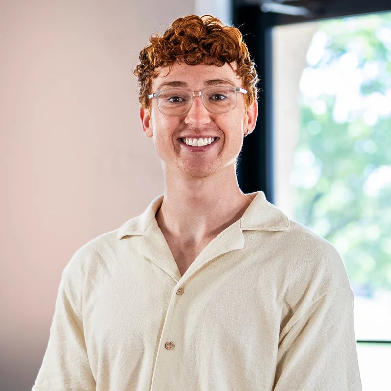

Eliminate the operational friction in church work, so staff can focus on what matters: people.
Meet the teamWhere Atlas came from.
The problem we saw
Working in ministry, we saw firsthand how much time and energy church staff were pouring into just staying organized. Meetings got missed, volunteers fell through the cracks, and follow-ups happened too late. Not because people didn't care, but because the tools weren't there to support them. Between the three of us, we've worked at a number of churches over the years, and the same pattern kept showing up everywhere.
Good people, stretched thin by the weight of administrative chaos.
Why we built Atlas
We decided to stop accepting that as the norm. We knew there had to be a better way, one built specifically for how churches actually operate. Atlas was born out of our own experiences on staff, the frustrations we lived through, and a deep belief that ministry leaders deserve tools that work as hard as they do. When your team is organized, communication flows, and nothing falls through the cracks, you get to focus on what the church is actually there for. People.
Three rules we build by.
Ministry first.
Does this help church staff spend less time on admin and more time serving people? If not, we don't build it. If it does, we obsess over making it effortless.
Radical simplicity.
If it's not simple, we don't ship it. If it's technical and complex, we find a way to make it simple and easy to understand.
Built for small staff teams.
Atlas is designed for church staffs of about 2 to 15 people, often without a full-time administrator. You shouldn't need an IT person to run your week.
Meet the team.
A small team with deep roots in ministry and technology. All three of us have served in churches our whole lives. We know this world because we've lived it.
Lucas Dial
Founder & CEOEight years of helping churches grow across the East Coast through creative, marketing, and technical solutions, and time spent on church staff myself, living the very problems Atlas solves.
Ben Rozelle
Co-founder & CTOI grew up in the church and have spent the last seven years as a Technical Director and Audio Engineer. In those roles I saw firsthand the gaps in church management tools, and the need for a solution designed by someone who truly understands ministry operations.

JMJosiah Miller
Co-founder & CMOMy upbringing in the church, together with seven years in church communications, has equipped me with a broad skill set as a communications and marketing director.
Let's talk.
We're inviting a handful of churches to build Atlas with us. Founding churches get 90 days free.